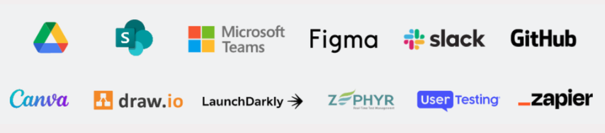

Atlassian Rovo AI
Powered by generative AI to help teams make better decisions and reach their goals faster — finding information across every SaaS app, learning as they work, and acting with virtual agents.
Learn more →Meet Rovo
Find
Ask a question in plain language and Rovo searches every connected app to bring back the answer.
Learn
Rovo chats through your knowledge base, connecting the dots across Confluence, Jira, and beyond.
Act
Rovo agents take on tasks — drafting content, updating tickets, and more — so your team can focus on the work only they can do.
Rovo Agents
Generate, review and refine content for all types of communications, product specs, goal setting and more.
Automate and streamline tasks such as creating a draft design for new requests, or taking action when a Jira issue progresses.
Answer questions, integrate research into Jira specs, create service checklists, or contribute to custom knowledge bases.
Help with onboarding new employees, building team gratitude and facilitating team collaboration.
Streamline time-consuming tasks like cleaning up Jira backlogs, organizing Confluence pages, or aligning content to formatting specs.
Use Rovo Agents out-of-the-box, create your own with Rovo's no-code interface, or explore a wide variety of agents on the Atlassian Marketplace.
Foundation
Powered by Atlassian Intelligence and two decades of experience, the Teamwork Graph pulls data from your Atlassian tools and other SaaS apps — unlocking a comprehensive view of your goals, knowledge, teams, and work.
Extend
The Atlassian ecosystem has AI-powered agents and search connectors to help you extend Rovo to every team and industry.
